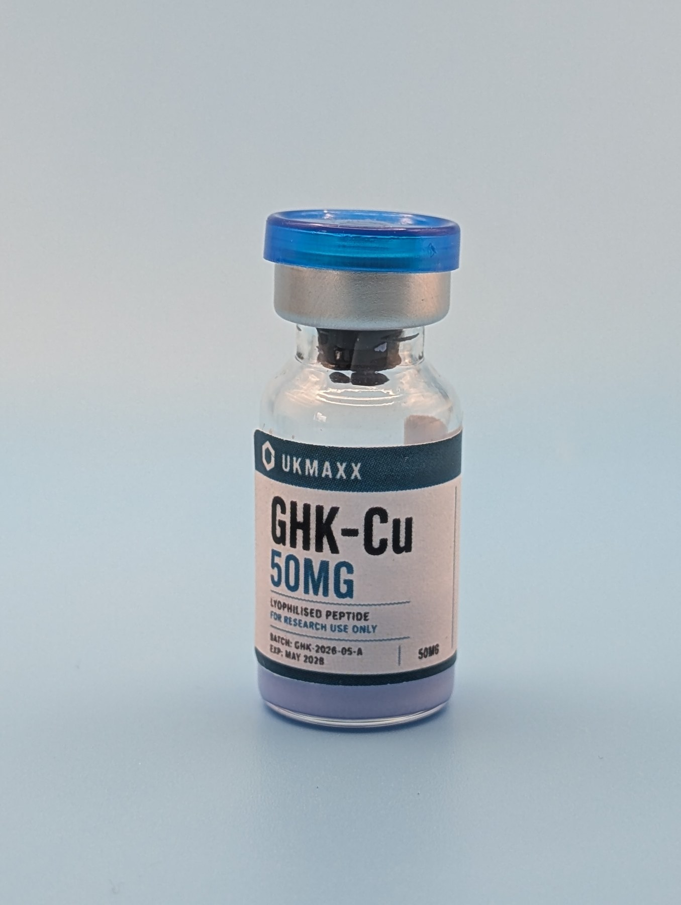

GHK-Cu 50mg copper peptide: UK batch guide.
Studied in copper signalling and extracellular-matrix research. This guide explains the GHK-Cu copper peptide identity, current Janoshik-tested batch, assay and purity results.

What is the GHK-Cu copper peptide?
GHK-Cu is the copper-bound form of the tripeptide GHK. In research terminology, “copper peptide” describes this peptide–copper complex rather than a general product category.
UKMAXX lists GHK-Cu 50mg for laboratory research involving copper signalling and extracellular-matrix models. It is supplied strictly for laboratory and in-vitro research use only.
GHK-Cu batch verification
The current released GHK-Cu batch is GHK-2026-05-A. Its public Janoshik Analytical record identifies the tested sample, HPLC method, measured content, purity and test date.
How to read the GHK-Cu assay and purity result
The report records 46.68mg GHK-Cu, comprising 38.84mg GHK and 7.84mg copper in the analysed sample. These figures describe measured content.
The separate 99.799% purity result describes the proportion attributed to the target compound under the stated HPLC analysis. Purity and assay answer different questions, so neither should be read as a substitute for the other.
From product vial to public batch record
The product listing, vial imagery, batch checker and original laboratory report all reference GHK-2026-05-A. Matching that code is what connects the physical UKMAXX product to the published result.
Use the GHK-Cu batch result to view its current status and availability, then follow the external verification link to inspect the original laboratory record.
UK stock and tracked dispatch
Current GHK-Cu stock is held in the UK and dispatched using Royal Mail Tracked 24. Working-day orders placed before 2PM are usually dispatched the same day.
For live stock, price and basket options, use the GHK-Cu 50mg product page, compare the GHK-Cu 3-pack copper peptide bundle, or view GHK-Cu alongside separately verified RETA and BPC-157 batches in the UKMAXX Research Bundle. To compare released batches, open the UKMAXX COA checker.
GHK-Cu 50mg FAQ
What does copper peptide mean in GHK-Cu?
GHK-Cu is the copper-bound form of the tripeptide GHK. The current report separately records the measured GHK-Cu, GHK and copper content.
Is the batch independently tested?
Yes. The current released GHK-Cu batch links to a published Janoshik Analytical HPLC COA record.
What is the difference between assay and purity?
Assay reports measured quantity in the tested sample. Purity reports the proportion attributed to the target compound under the stated analytical method. Both should be read alongside the batch details and original laboratory report.
Do you provide human-use or cosmetic advice?
No. UKMAXX does not provide dosing, human-use, cosmetic or medical advice. Products are supplied strictly for laboratory and in-vitro research use only.